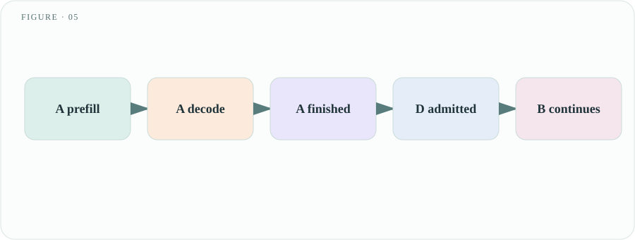

PagedAttention 解决了"怎么高效存"的问题。这一章咱们解决"怎么高效跑"的问题——Continuous Batching。如果说 PagedAttention 是 vLLM 的心脏，那 Continuous Batching 就是它的血泵——让 GPU 永不闲置。

INTERACTIVE LAB
观察一次调度迭代
请求完成后释放资源，等待队列中的新请求才有机会进入后续迭代；真实调度还会受 token budget 和 KV Cache 容量约束。
当前轮次 0：A、B、C 正在运行。
5.1 静态批处理的"木桶效应"
传统推理框架（HF Transformers、旧版 TGI）用的是静态批处理。思路很简单：攒够 N 个请求，打包成一个 batch，一起跑 forward，全部跑完再打包下一批。
问题出在 LLM 的输出长度极度不均：
Batch 1: [请求A, 请求B, 请求C]
请求A (简单问答): prompt 10 tokens → 生成 15 tokens → 耗时 0.8s ✓ 完成
请求B (文章生成): prompt 50 tokens → 生成 2000 tokens → 耗时 30s ...还在跑
请求C (翻译): prompt 100 tokens → 生成 500 tokens → 耗时 8s ✓ 完成
A和C闲置了 29.2s (A) 和 22s (C)，干等B。GPU 利用率只有 58%。这就是"木桶效应"——batch 的吞吐被最慢的那个请求拖累。更糟糕的是，后面排队的请求 D、E、F...也只能干等。
5.2 Continuous Batching 的核心思想
别等整个 batch 都完成，每步迭代完都重新组 batch：
Step 1: Batch = [A(prefill), B(prefill), C(prefill)]
Step 2: Batch = [A(decode), B(prefill), C(decode)] ← 混搭
Step 3: Batch = [A(decode), B(decode), C(decode)]
Step 4: Batch = [A(decode), B(decode), C(decode)]
...
Step 16: A 生成了 15 tokens 后结束 → 立刻从等待队列拉入请求D
Step 17: Batch = [D(prefill), B(decode), C(decode)] ← D 挤进 A 的槽位！
...
每步都可能换人！更充分地利用 GPU请求 A 一完成，它的 KV cache block 立刻释放，新请求 D（已经在等待队列里）马上开始 prefill。这一步内就完成了"换人"。
5.3 两种状态的混合调度
| 请求状态 | 操作 | 需要的 GPU 资源 | 特点 |
|---|---|---|---|
| Prefill | 一次性处理所有 prompt token | 计算多，KV cache 写入多 | 耗时短（0.1-1s），但单步重 |
| Decode | 每步产生一个 output token | 计算少，KV cache 读为主 | 单个轻（~10ms），但步数多（可达数千步） |
vLLM 的调度器在每一步决定：哪些请求做 prefill（其中哪些用 chunked prefill 只处理一部分），哪些做 decode。一个 batch 里 prefill 和 decode 请求可以混合。
PagedAttention + Continuous Batching = 绝配：PagedAttention 让"换人"的成本极低——新请求只需要从 free pool 分配几个 block，写几行 Block Table 就好。如果是传统连续分配，还得在显存里找一块连续空间，"换人"本身就可能卡住。
5.4 调度过程（简化实现）
class Scheduler:
def step(self, waiting_queue, running):
# 1. 完成请求出列，释放资源
for req in running:
if req.is_done():
kv_cache.free(req.block_table) # PagedAttention: O(1)归还
running.remove(req)
# 2. 新请求入列（只要显存够）
free_blocks = kv_cache.free_count()
for req in waiting_queue:
needed = ceil(req.num_tokens / BLOCK_SIZE)
if needed <= free_blocks:
req.block_table = kv_cache.allocate(needed)
running.append(waiting_queue.pop(req))
free_blocks -= needed
# 3. 组 batch
return Batch(running)5.5 性能对比
5.6 生产配置
# 关键参数
vllm serve model \
--max-num-seqs 256 \ # 最大并发序列数（太大 → OOM）
--max-model-len 8192 \ # 单个请求最大长度
--gpu-memory-utilization 0.95 # 给调度留 buffer踩坑提醒：--max-num-seqs 设太大不会提升吞吐——显存放不下太多 KV cache 会导致频繁抢占。设太小则等待队列堆积。建议从 128 开始，观察 GPU 利用率和 free block 数，逐步调整。GPU 利用率 85-95% 是最佳区间。
Continuous batching 听起来简单，但它和 PagedAttention 的结合才真正解锁了威力。下一章，咱们不再纸上谈兵——直接装 vLLM，跑起来！
参考资料与证据
- vLLM V1 指南Unified scheduler；Chunked Prefill
- vLLM Scheduler 配置SchedulerConfig